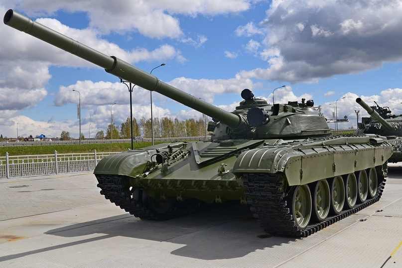
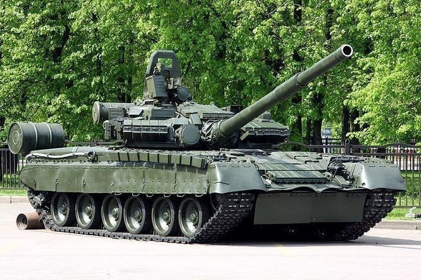
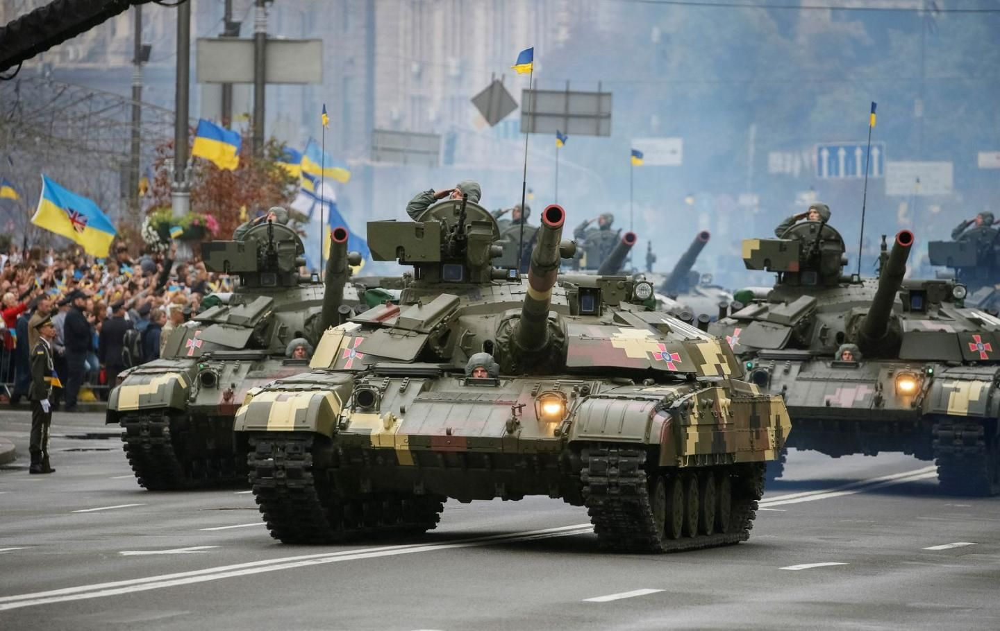

Ежегодно во второе воскресенье сентября в Беларуси отмечается День танкиста.
Он ведет свою историю с советских времен и установлен в июле 1946 года в ознаменование
выдающихся заслуг бронетанковых и механизированных войск в Великой Отечественной войне,
самоотверженного труда танкостроителей по оснащению Вооруженных сил бронетанковой техникой.
Сегодня танковые войска белорусской армии представлены отдельными танковыми и механизированными
батальонами отдельных механизированных бригад, которые способны выполнять боевые задачи как
самостоятельно, так и во взаимодействии с общевойсковыми частями и подразделениями, а также с
подразделениями и частями сил специальных операций, других войск и воинских формирований.
В ходе реформирования Вооруженных сил создана многоуровневая региональная система технического обеспечения,
позволяющая достичь восстановления вооружения и военной техники. На танковом полигоне 72-го объединенного учебного
центра подготовки прапорщиков и младших военных специалистов, где готовят танкистов, практически круглосуточно
идет подготовка механиков-водителей. Наводчики осваивают искусство стрельбы из вооружения танка. При обучении
используются современные электронные тренажеры, позволяющие экономить горючее и снаряды, моделировать различные условия боя.
Танк продолжает оставаться основной боевой единицей сухопутных войск. Он обладает большой огневой мощью, защищенностью и способен
решать широкий круг задач. Как показывает боевой опыт последних десятилетий, использование танков позволяет в разы снизить потери
среди мотострелковых частей и оказывает сильное деморализующее действие на противника.Основными боевыми машинами белорусских танкистов являются ещё советские
образцы военной техники — танки Т-72 и Т-80.
Т-72 «Урал» — советский средний и основной танк. Самый массовый танк второго поколения.
Принят на вооружение в Вооружённых Силах СССР с 1973 года. Т-72 разработан и производился Уралвагонзаводом в Нижнем Тагиле.ПОДРОБНЕЕ...

Т-80 — боевая машина, основной танк, производившийся в СССР и на Украине. Танк с единой газотурбинной силовой
установкой. Первый в мире основной танк со встроенной противоснарядной динамической защитой. На вооружении армии СССР, затем России с 1976 года. ПОДРОБНЕЕ...

Танк T-72 и T-80
Они оснащены комплектом динамической защиты,
отличаются высокой скорострельностью орудий, имеют высокую живучесть и ремонтопригодность.
К тому же, в настоящее время машины Т-72 активно модернизируются белорусскими предприятиями: устанавливаются новые элементы системы управления
огнем, современные приборы наблюдения, что позволяет поднять огневую мощь белорусских танков до уровня новейших разработок зарубежной танковой промышленности.
День танкиста в Украине

Механизированные и танковые войска Украины составляют основу Сухопутных войск Вооруженных Сил Украины.
Во второе воскресенье сентября танкисты Украины отмечают свой профессиональный праздник — День танкиста. Он был учрежден в августе 1997 года Указом
Президента в поддержку инициативы ветеранов танковых войск и танкостроителей Украины, учитывая их заслуги в годы Великой Отечественной войны и с целью
воспитания воинов-танкистов Вооруженных Сил Украины на лучших традициях предыдущих поколений.
В состав механизированных и танковых войск Сухопутных войск Украины входят механизированный полк, механизированные и танковые бригады.
Факты о танках и танкистах
19 августа 1914 года в России было создано подразделение, вооруженное боевыми бронированными машинами.
С этого началась история нового рода войск – танковых, механизированных, броневых.
Название «танк» в переводе с английского языка означает «бак». Англичане,
которые впервые начали применять этот вид оружия в Первой Мировой войне,
скрывали его наличие до начала операции. Танки отправляли на фронт в деревянных
коробках под видом цистерн для воды.
Во времена Второй Мировой войны в североафриканском регионе среди немецких танкистов существовала
традиция переезжать кучки верблюжьего навоза. Считалось, что это приносило удачу. Союзники пошли на хитрый
ход и начала изготавливать мины, которые внешним видом напоминали кучки навоза. После серии подрывов немцы
начали избегать нетронутый навоз, после чего союзники начали изготавливать мины в виде навоза со следами гусениц.
Самым тяжелым танком в мире считается немецкая машина «Маус», вес которой составлял 188 тон.
Такие страны, как Мексика, Бельгия, Панама и Непал, не имеют в арсенале своих армий ни одного танка.
Государством с самой высокой плотностью танков на единицу площади государства является Сингапур. На 714 квадратных
метров приходится 132 танка, что составляет 1 танк на 5 квадратных метров.
Впервые в истории о танках говорил еще Леонардо да Винчи. В XV веке он описывал закрытые железные колесницы, которые смогут
прорывать оборону противника.
В СССР и других странах в ХХ веке долгое время разрабатывалась концепция летающих танков. Некоторые наиболее удачные
образцы смогли подняться в воздух, но на практике нигде не применялись.
В начале Великой Отечественной войны ресурсы СССР были сильно ограничены, танков не хватало. Поэтому иногда в ход
шли обычные тракторы, обшитые броней. Их бросали в бой по ночам, включив фары и сирены, и психологический эффект от такого
представления нельзя было переоценить: враг обращался в бегство. Такие тракторы прозвали НИ-1, что расшифровывалось как "На испуг".
Союзники из США называли знаменитый советский танк Т-34 Микки Маусом - крышки башенных люков, расположенные на крыше,
напоминали уши известного мышонка.
Подвиги и отвага танкистов не раз становились центральными сюжетами для произведений искусства.
Художественные фильмы о танкистах в нашей стране стали по-настоящему народными. Речь идет о таких картинах как "Жаворонок" (1964),
"На войне как на войне" (1968), киноэпопее "Освобождение" (1967-1971). Еще больше - знаменитых песен, посвященных отважным танкистам: разудальская
"Три танкиста", печальная "По полю танки грохотали", боевая "Марш советских танкистов", веселая "Танкист" в исполнении группы "Жуки".
Подарки ко дню танкиста
Вид подарка
Описание
Символические подарки
Хорошей идеей подарка к празднику может стать сувенир с символикой танковых войск: кружка, брелок, футболка, кепка, зажигалка, портсигар, фляга.
Подарок эмоция
В День танкиста можно преподнести подарок, который позволит разнообразить досуг и принесет заряд положительных эмоций.
Сертификат на игру в пейнтбольном клубе, поход в боулинг, катание на квадроциклах, прохождение квеста подойдет для любителей активного отдыха и адреналина.
Ножи
Складной многофункциональный нож послужит отличным презентом, который придет на помощь во время путешествий и отдыха на природе.